ROS 2 综合应用#
学习目标#
在本示例中，您将运用其他多个 ROS 2 和 Isaac Sim 教程中介绍的概念，实现从机器人 URDF 定义到完全由 ROS 2 驱动的机器人系统的构建。
将 URDF 机器人模型导入 Isaac Sim
在机器人模型中整合物理和碰撞属性
为模型附加物理精确的传感器
使用代码或 OmniGraph 构建发布者和订阅者，将机器人连接到 ROS 2 网络
集成导航栈，使机器人能够在环境中移动
本教程使用 Clearpath Robotics Dingo-D 作为机器人模型。 这是一款专为室内使用设计的差速驱动机器人。
入门指南#
先决条件
已完成 ROS 2 安装，确保 ROS 2 可用且 ROS 2 扩展已启用。
通过导航至 Window > Extensions，在 Extension Manager 窗口中启用
isaacsim.ros2.bridge扩展。已克隆 IsaacSim-ros_workspaces 仓库并加载了工作空间。
警告
本教程仅支持 PhysX SDK 后端；由于这些资产使用了负缩放的网格，因此不支持 Newton。请参阅 Newton 资产兼容性。
导入 URDF#
使用 URDF Importer Extension 将机器人导入 Isaac Sim。这涉及首先生成 URDF，然后将其发布到 /robot_description 主题。
提示
有关详细的 URDF 导入和物理调整指南，请参阅 URDF 导入：Turtlebot。
生成机器人描述#
在已 source ROS 的终端中，安装 Clearpath Robotics 软件包及其他必要依赖项。
sudo apt install ros-$ROS_DISTRO-clearpath-common ros-$ROS_DISTRO-xacro
本教程中所有 Windows 命令均使用 PowerShell 语法。请在已 source ROS 2 工作区的 PowerShell 终端中运行这些命令。
这些软件包已包含在您已 source 的 ROS 2 工作区中；无需额外的安装步骤。
设置一个指向
isaacsim_clearpath_nav2包的 params 目录的便捷变量。所有生成的文件都将存储在此处。任何 Clearpath 机器人配置均可使用；本教程使用 Dingo-D（dd100）。export ROBOT_PARAMS=$(ros2 pkg prefix isaacsim_clearpath_nav2)/share/isaacsim_clearpath_nav2/params/dd100
$env:ROBOT_PARAMS = "$(ros2 pkg prefix isaacsim_clearpath_nav2)\share\isaacsim_clearpath_nav2\params\dd100"
将示例 Dingo-D 配置复制为
robot.yaml。cp $(ros2 pkg prefix clearpath_config)/share/clearpath_config/sample/dd100_default.yaml $ROBOT_PARAMS/robot.yaml
Copy-Item "$(ros2 pkg prefix clearpath_config)\share\clearpath_config\sample\dd100_default.yaml" ` "$env:ROBOT_PARAMS\robot.yaml"
使用 Clearpath 生成器生成机器人描述。
ros2 run clearpath_generator_common generate_description -s $ROBOT_PARAMS
python "$(ros2 pkg prefix clearpath_generator_common)\lib\clearpath_generator_common\generate_description" -s $env:ROBOT_PARAMS
启动机器人描述节点，在
/robot_description话题上发布 URDF。请保持此终端开启。ros2 launch clearpath_platform_description description.launch.py -- setup_path:=$ROBOT_PARAMS
ros2 launch clearpath_platform_description description.launch.py -- setup_path:=$env:ROBOT_PARAMS
Full copy-paste command
export ROBOT_PARAMS=$(ros2 pkg prefix isaacsim_clearpath_nav2)/share/isaacsim_clearpath_nav2/params/dd100
cp /opt/ros/$ROS_DISTRO/share/clearpath_config/sample/dd100_default.yaml $ROBOT_PARAMS/robot.yaml
ros2 run clearpath_generator_common generate_description -s $ROBOT_PARAMS
ros2 launch clearpath_platform_description description.launch.py -- setup_path:=$ROBOT_PARAMS
$env:ROBOT_PARAMS = "$(ros2 pkg prefix isaacsim_clearpath_nav2)\share\isaacsim_clearpath_nav2\params\dd100"
Copy-Item "$(ros2 pkg prefix clearpath_config)\share\clearpath_config\sample\dd100_default.yaml" `
"$env:ROBOT_PARAMS\robot.yaml"
python "$(ros2 pkg prefix clearpath_generator_common)\lib\clearpath_generator_common\generate_description" -s $env:ROBOT_PARAMS
ros2 launch clearpath_platform_description description.launch.py -- setup_path:=$env:ROBOT_PARAMS
导入到 Isaac Sim#
使用 URDF Importer Extension 直接从您在上一节中创建的正在运行的机器人描述节点导入机器人描述。
在已 source IsaacSim-ros_workspaces 构建的终端中启动 Isaac Sim。
通过导航到 Window > Extensions，在 Extension Manager 窗口中安装并启用
isaacsim.ros2.urdf扩展。导航到 File > Import from ROS2 URDF Node。
在 ROS 2 Node 文本框中输入
robot_state_publisher，然后单击 Find Node。如果成功，应显示“ROS package paths resolved”。单击 Import 以导入机器人描述。
将默认 prim 重命名为
dd100。使用
SHIFT+CTRL+S将 stage 保存为dd100.usd。
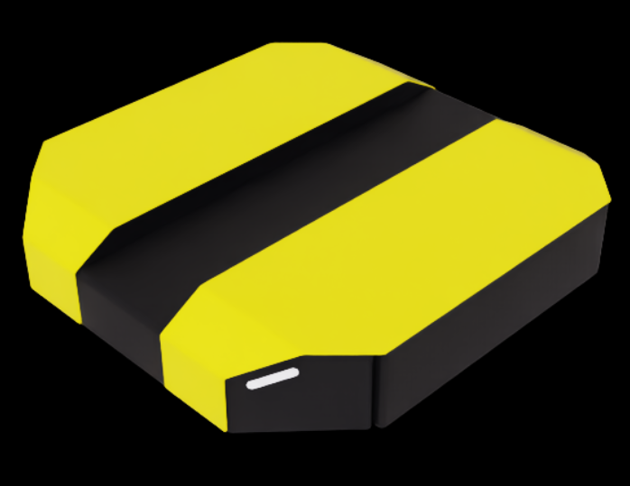
调整模型物理属性#
默认情况下，导入的 URDF 模型存在一些需要修正的异常。
禁用非物理关节。URDF 以及由此生成的 USD 包含一些不必要的关节。请禁用 除
front_left_wheel_joint、front_right_wheel_joint和rear_caster_joint关节之外的所有关节。这可以通过在 Stage Tree 中使用 CTRL+LMB 单击每个关节，并在 Physics 下取消选中 Joint Enabled 来完成。将
front_left_wheel_joint和front_right_wheel_joint的 Damping（阻尼）更新为10000。这使机器人能够进行速度控制。您可以在每个关节的 Property（属性）选项卡下的 Physics > Drive（物理 > 驱动）中找到 Damping。添加更准确的摩擦系数。该机器人是差速驱动机器人，因此后万向轮应能自由滑动，而驱动轮需要良好的抓地力。
在
/dd100/Materials下创建两个物理材质：将CasterMaterial的 Dynamic Friction（动态摩擦）和 Static Friction（静态摩擦）设置为0.0，将WheelMaterial的两者都设置为1.0。您可以通过点击 Create > Physics > Physics Material（创建 > 物理 > 物理材质）并选择 Rigid Body Material（刚体材质）来创建新材质。将
CasterMaterial分配给rear_caster，将WheelMaterial分配给front_left_wheel_link和front_right_wheel_link。您可以使用搜索栏找到这些 prim，然后通过 Materials on selected models（所选模型上的材质）下拉菜单应用材质。
通过点击 Create > Xform（创建 > Xform）创建一个空的 Xform，将其移动到
/dd100/Geometry/base_link/chassis_link，并将其命名为base_link。这将在 ROS 中用于表示机器人的基础变换。
确保保存 Stage。
在 Isaac Sim 中测试 URDF#
为了验证导入结果，请构建一个简单的环境并将机器人添加到其中。
使用
CTRL+N创建新的 Stage。通过 Create > Environments > Flat Grid（创建 > 环境 > 平面网格）添加现有环境。
在 Content 浏览器中，将上一步创建的 USD 文件拖放到 Stage 上。
将 Transform 中的 Translate 分量归零，以将机器人放置在原点。如果不存在 Transform，请点击 Add Transforms。
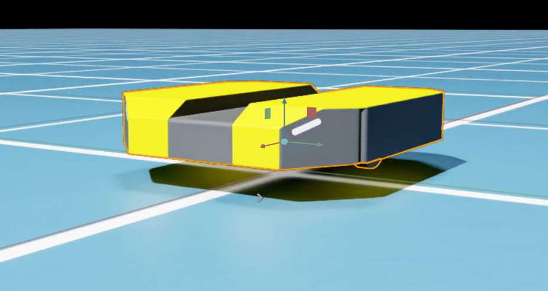
作为快速测试，将两个车轮关节的 Target Velocity 设置为 100。你可以在 front_left_wheel_joint 和 front_right_wheel_joint 关节的 Property 选项卡下的 Physics > Drive 中找到 Target Velocity。
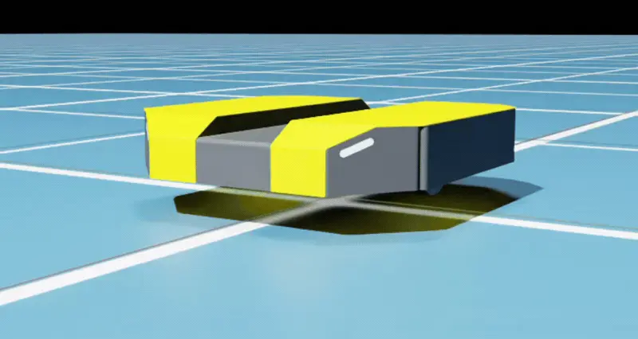
应用车轮关节 Target Velocity 后，Dingo-D 向前移动。#
添加传感器#
为了让机器人能够感知环境，请创建几个传感器。
提示
有关详细的传感器操作指南，请参阅 ROS 2 Cameras 和 RTX Lidar Sensors。
使用 File > Open 或在 Content 浏览器中双击，打开你之前创建的机器人 USD。
将舞台保存为
dd100_with_sensors.usd。首先添加一款常见的现成相机 RealSense D455。
在 Content Browser 中，导航至 Isaac Sim > Sensors > RealSense > D455。
将
rsd455.usd拖到 Stage 面板中的/dd100/Geometry/base_link/chassis_link上。选择生成的
/dd100/Geometry/base_link/chassis_link/rsd455prim。如果它没有 Transform 部分，请点击 Add Transforms。将其 Translate 分量设置为(0.3, 0, 0.05)，以将其定位在底盘的前部。默认情况下，RealSense 是受重力影响的 Rigid Body。要将其固定到机器人上，请点击
/dd100/Geometry/base_link/chassis_link/rsd455/RSD455，并在 Property 选项卡的 Physics 下取消选中 Rigid Body Enabled。
接下来添加一个 LiDAR。
通过点击 Create > Sensors > RTX Lidar > SICK > microScan3 来创建传感器。
将传感器拖到
/dd100/Geometry/base_link/chassis_link并将其重命名为sim_lidar。将 Translate 分量设置为
(0.0, 0.0, 0.15)，以将其定位在底盘上方。
保存 Stage。
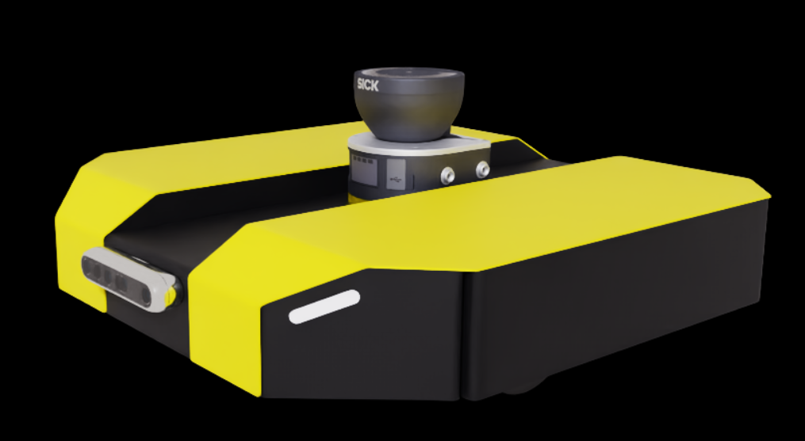
安装了传感器的 DD100：前部装有 RealSense D455 深度相机，顶部装有 SICK LiDAR。#
接下来，将机器人放置在一个视觉上有趣的环境中。
使用
CTRL+N创建新的 Stage。从 Content Browser 中拖入仓库环境，路径为 Isaac Sim > Environments > Simple_Warehouse > warehouse.usd。
将 Translate 分量归零。
将
dd100_with_sensors.usdUSD 文件拖到舞台上。将 Translate 分量设置为
(-5.0, 10.0, 0.0)，将 Orient 分量设置为(0.0, 0.0, 135.0)。要查看机器人视角，请点击 Window > Viewports > Viewport 2 以创建额外的视口。
在第二个视口中，点击左上角的 Perspective 并选择 Cameras > Camera_OmniVision_OV9782_Color 以更改相机。
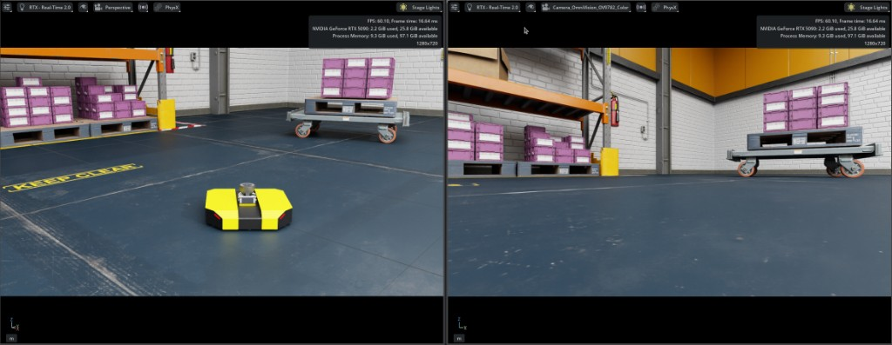
Simple Warehouse 中的 DD100：Viewport 1 中的透视视图（左）和 Viewport 2 中的 Camera_OmniVision_OV9782_Color 传感器视图（右）。#
ROS 2 集成#
现在机器人已配备传感器，您可以控制它执行有用的任务。目标是开发一个 ROS 2 堆栈，控制机器人在拥挤仓库中的两个点之间移动。为此，您需要：
设置仓库环境
创建仓库的占用地图
构建机器人与基于 ROS 2 的控制堆栈（特别是 Nav2）之间的接口
控制机器人在场景中的两个点之间移动
构建 OmniGraph 节点#
注意
可以编写 rclpy 代码，直接在 Isaac Sim 中创建用于发布和订阅 Nav2 堆栈所需的 Python 节点。但是，为了便于举例说明，本教程使用 ROS 2 OmniGraph 节点来构建所需的 ROS 节点。
Nav2 需要发布和订阅以下主题（具体的主题名称取决于 Nav2 的配置）：
发布
ROS 2 主题
ROS 2 消息类型
/platform/joint_statessensor_msgs/JointState
/tf和/tf_statictf2_msgs/TFMessage
/odomnav_msgs/Odometry
/scansensor_msgs/LaserScan
/clockrosgraph_msgs/Clock
订阅
ROS 2 主题
ROS 2 消息类型
/cmd_velgeometry_msgs/Twist
为每个主题系统创建独立的 ActionGraph：
打开
dd100_with_sensors.usd文件。本教程在机器人中创建了四个 ActionGraph：
joint_statesodom_tfscancmd_vel
clock图稍后会添加到更大的场景中。odom_tf图发布里程计、odom→base_link变换以及 LiDAR 传感器的静态变换。其余机器人链接变换由单独启动的外部robot_state_publisher计算。将 ActionGraph 放置在以下路径：
ActionGraph 名称
路径
joint_states/dd100/Geometry/base_link/chassis_link/joint_statesodom_tf/dd100/Geometry/base_link/chassis_link/odom_tfscan/dd100/Geometry/base_link/chassis_link/sim_lidar/scancmd_vel/dd100/Geometry/base_link/chassis_link/cmd_vel
使用 ROS2 RTX Lidar Helper 发布 LaserScan 数据。
提示
如需详细操作指南，请参阅 RTX Lidar Sensors。
创建一个 On Playback Tick 节点，并将
Tick连接到一个 Isaac Run One Simulation Frame 节点。将 Isaac Run One Simulation Frame 的输出连接到一个 Isaac Create Render Product 节点。将其
cameraPrim属性设置为您之前创建的传感器的.../sim_lidar/Lidarprim。创建一个 ROS2 RTX Lidar Helper 节点。将
frameId设置为sim_lidar，将topicName设置为scan，并将type设置为laser_scan。将 Isaac Create Render Product 的输出连接到 ROS2 RTX Lidar Helper 的输入。
创建一个 ROS2 Context 节点，并将其连接到 ROS2 RTX Lidar Helper 节点。
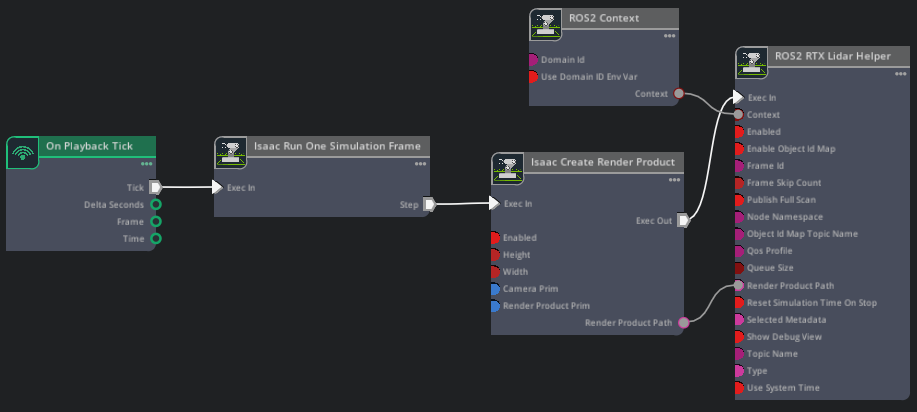
Script Editor Code
import omni.graph.core as og
import omni.kit.app
import omni.usd
from pxr import Sdf
extension_manager = omni.kit.app.get_app().get_extension_manager()
extension_manager.set_extension_enabled_immediate("isaacsim.core.nodes", True)
extension_manager.set_extension_enabled_immediate("isaacsim.ros2.nodes", True)
ROBOT_PRIM = "/dd100"
CHASSIS_LINK = f"{ROBOT_PRIM}/Geometry/base_link/chassis_link"
LIDAR_SENSOR_PRIM = f"{CHASSIS_LINK}/sim_lidar/Lidar"
GRAPH_PATH = f"{CHASSIS_LINK}/sim_lidar/scan"
stage = omni.usd.get_context().get_stage()
if stage.GetPrimAtPath(GRAPH_PATH):
stage.RemovePrim(GRAPH_PATH)
keys = og.Controller.Keys
og.Controller.edit(
{"graph_path": GRAPH_PATH, "evaluator_name": "execution"},
{
keys.CREATE_NODES: [
("OnPlaybackTick", "omni.graph.action.OnPlaybackTick"),
("RunOneFrame", "isaacsim.core.nodes.OgnIsaacRunOneSimulationFrame"),
("CreateRenderProduct", "isaacsim.core.nodes.IsaacCreateRenderProduct"),
("Context", "isaacsim.ros2.bridge.ROS2Context"),
("LidarHelper", "isaacsim.ros2.bridge.ROS2RtxLidarHelper"),
],
keys.SET_VALUES: [
("CreateRenderProduct.inputs:cameraPrim", [Sdf.Path(LIDAR_SENSOR_PRIM)]),
("LidarHelper.inputs:topicName", "scan"),
("LidarHelper.inputs:type", "laser_scan"),
("LidarHelper.inputs:frameId", "sim_lidar"),
],
keys.CONNECT: [
("OnPlaybackTick.outputs:tick", "RunOneFrame.inputs:execIn"),
("RunOneFrame.outputs:step", "CreateRenderProduct.inputs:execIn"),
("CreateRenderProduct.outputs:execOut", "LidarHelper.inputs:execIn"),
("CreateRenderProduct.outputs:renderProductPath", "LidarHelper.inputs:renderProductPath"),
("Context.outputs:context", "LidarHelper.inputs:context"),
],
},
)
此 ActionGraph 在 /platform/joint_states 上发布机器人的关节位置和速度。
提示
如需详细操作指南，请参阅 Joint Control: Extension and Python Scripting。
创建一个 On Playback Tick 节点。
创建一个 ROS2 Publish Joint State 节点。将
targetPrim设置为/dd100/Geometry/base_link/chassis_link，将topicName设置为platform/joint_states。创建 Isaac Read Simulation Time 和 ROS2 Context 节点，并将它们连接到 ROS2 Publish Joint State。
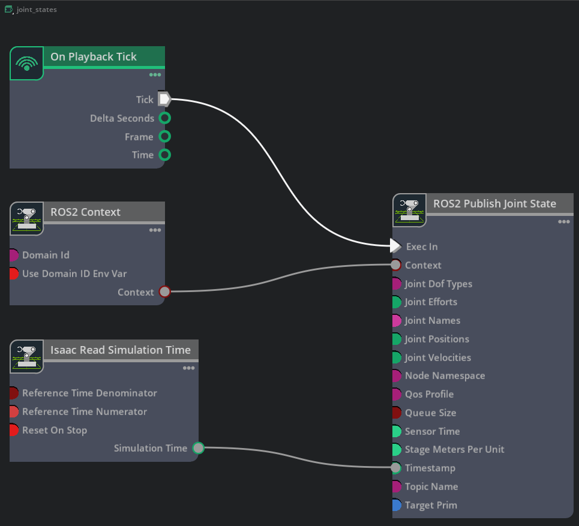
Script Editor Code
import omni.graph.core as og
import omni.kit.app
import omni.usd
from pxr import Sdf
extension_manager = omni.kit.app.get_app().get_extension_manager()
extension_manager.set_extension_enabled_immediate("isaacsim.core.nodes", True)
extension_manager.set_extension_enabled_immediate("isaacsim.ros2.nodes", True)
ROBOT_PRIM = "/dd100"
CHASSIS_LINK = f"{ROBOT_PRIM}/Geometry/base_link/chassis_link"
GRAPH_PATH = f"{CHASSIS_LINK}/joint_states"
stage = omni.usd.get_context().get_stage()
if stage.GetPrimAtPath(GRAPH_PATH):
stage.RemovePrim(GRAPH_PATH)
keys = og.Controller.Keys
og.Controller.edit(
{"graph_path": GRAPH_PATH, "evaluator_name": "execution"},
{
keys.CREATE_NODES: [
("OnPlaybackTick", "omni.graph.action.OnPlaybackTick"),
("ReadSimTime", "isaacsim.core.nodes.IsaacReadSimulationTime"),
("Context", "isaacsim.ros2.bridge.ROS2Context"),
("PublishJointState", "isaacsim.ros2.bridge.ROS2PublishJointState"),
],
keys.SET_VALUES: [
("PublishJointState.inputs:targetPrim", [Sdf.Path(CHASSIS_LINK)]),
("PublishJointState.inputs:topicName", "platform/joint_states"),
],
keys.CONNECT: [
("OnPlaybackTick.outputs:tick", "PublishJointState.inputs:execIn"),
("ReadSimTime.outputs:simulationTime", "PublishJointState.inputs:timeStamp"),
("Context.outputs:context", "PublishJointState.inputs:context"),
],
},
)
此 ActionGraph 发布里程计数据，广播 odom → base_link 变换，并发布 sim_lidar 传感器帧的静态变换。
提示
如需了解详细操作指南，请参阅 ROS 2 变换树与里程计。
创建一个 On Playback Tick 节点。
创建一个 Isaac Compute Odometry Node 节点，并将
chassisPrim设置为/dd100/Geometry/base_link/chassis_link。创建一个 ROS2 Publish Odometry 节点，并将
topicName和odomFrameId设置为odom。创建一个 ROS2 Publish Raw Transform Tree 节点，并将
childFrameId设置为base_link，将parentFrameId设置为odom。创建一个 Isaac Compute Transform Tree 节点。将
parentPrim设置为/dd100/Geometry/base_link/chassis_link，将targetPrims设置为/dd100/Geometry/base_link/chassis_link/sim_lidar。创建一个 ROS2 Publish Transform Tree 节点。将
topicName设置为tf_static并启用staticPublisher。将 Isaac Compute Transform Tree 的输出（childFrames、orientations、parentFrames、translations）连接到 ROS2 Publish Transform Tree 的对应输入。这会发布从base_link到sim_lidar的静态变换，以便 Nav2 可以使用 LiDAR 数据。将 Isaac Compute Odometry Node 的每个匹配输出连接到 ROS2 Publish Odometry 和 ROS2 Publish Raw Transform Tree 的对应输入。
创建 Isaac Read Simulation Time 和 ROS2 Context 节点，并将它们连接到每个 ROS 2 发布者节点。
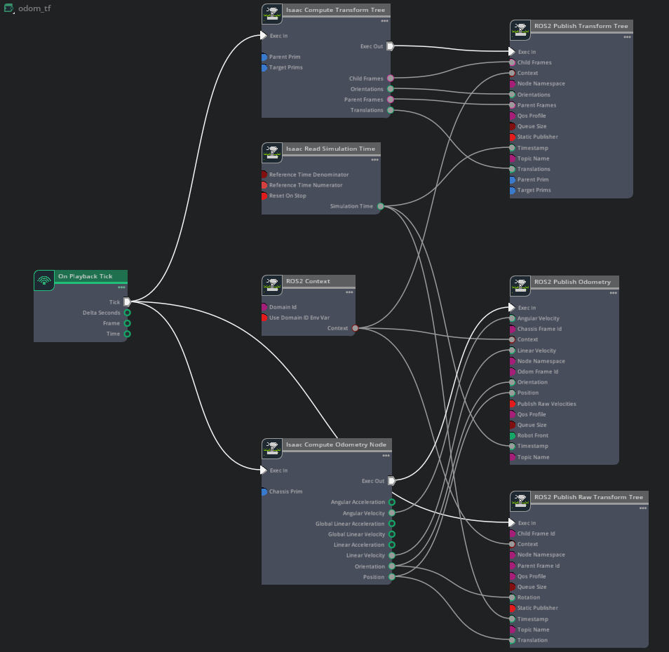
Script Editor Code
import omni.graph.core as og
import omni.kit.app
import omni.usd
from pxr import Sdf
extension_manager = omni.kit.app.get_app().get_extension_manager()
extension_manager.set_extension_enabled_immediate("isaacsim.core.nodes", True)
extension_manager.set_extension_enabled_immediate("isaacsim.ros2.nodes", True)
ROBOT_PRIM = "/dd100"
CHASSIS_LINK = f"{ROBOT_PRIM}/Geometry/base_link/chassis_link"
SIM_LIDAR = f"{CHASSIS_LINK}/sim_lidar"
GRAPH_PATH = f"{CHASSIS_LINK}/odom_tf"
stage = omni.usd.get_context().get_stage()
if stage.GetPrimAtPath(GRAPH_PATH):
stage.RemovePrim(GRAPH_PATH)
keys = og.Controller.Keys
og.Controller.edit(
{"graph_path": GRAPH_PATH, "evaluator_name": "execution"},
{
keys.CREATE_NODES: [
("OnPlaybackTick", "omni.graph.action.OnPlaybackTick"),
("ReadSimTime", "isaacsim.core.nodes.IsaacReadSimulationTime"),
("Context", "isaacsim.ros2.bridge.ROS2Context"),
("ComputeOdom", "isaacsim.core.nodes.IsaacComputeOdometry"),
("PublishOdom", "isaacsim.ros2.bridge.ROS2PublishOdometry"),
("PublishRawTF", "isaacsim.ros2.bridge.ROS2PublishRawTransformTree"),
("ComputeTransformTree", "isaacsim.core.nodes.IsaacComputeTransformTree"),
("PublishTF", "isaacsim.ros2.bridge.ROS2PublishTransformTree"),
],
keys.SET_VALUES: [
("ComputeOdom.inputs:chassisPrim", [Sdf.Path(CHASSIS_LINK)]),
("PublishOdom.inputs:topicName", "odom"),
("PublishOdom.inputs:odomFrameId", "odom"),
("PublishRawTF.inputs:childFrameId", "base_link"),
("PublishRawTF.inputs:parentFrameId", "odom"),
("ComputeTransformTree.inputs:parentPrim", Sdf.Path(CHASSIS_LINK)),
("ComputeTransformTree.inputs:targetPrims", [Sdf.Path(SIM_LIDAR)]),
("PublishTF.inputs:topicName", "tf_static"),
("PublishTF.inputs:staticPublisher", True),
],
keys.CONNECT: [
("OnPlaybackTick.outputs:tick", "ComputeOdom.inputs:execIn"),
("ComputeOdom.outputs:execOut", "PublishOdom.inputs:execIn"),
("ComputeOdom.outputs:angularVelocity", "PublishOdom.inputs:angularVelocity"),
("ComputeOdom.outputs:linearVelocity", "PublishOdom.inputs:linearVelocity"),
("ComputeOdom.outputs:orientation", "PublishOdom.inputs:orientation"),
("ComputeOdom.outputs:position", "PublishOdom.inputs:position"),
("ReadSimTime.outputs:simulationTime", "PublishOdom.inputs:timeStamp"),
("OnPlaybackTick.outputs:tick", "PublishRawTF.inputs:execIn"),
("ComputeOdom.outputs:orientation", "PublishRawTF.inputs:rotation"),
("ComputeOdom.outputs:position", "PublishRawTF.inputs:translation"),
("ReadSimTime.outputs:simulationTime", "PublishRawTF.inputs:timeStamp"),
("OnPlaybackTick.outputs:tick", "ComputeTransformTree.inputs:execIn"),
("ComputeTransformTree.outputs:execOut", "PublishTF.inputs:execIn"),
("ComputeTransformTree.outputs:childFrames", "PublishTF.inputs:childFrames"),
("ComputeTransformTree.outputs:orientations", "PublishTF.inputs:orientations"),
("ComputeTransformTree.outputs:parentFrames", "PublishTF.inputs:parentFrames"),
("ComputeTransformTree.outputs:translations", "PublishTF.inputs:translations"),
("ReadSimTime.outputs:simulationTime", "PublishTF.inputs:timeStamp"),
("Context.outputs:context", "PublishOdom.inputs:context"),
("Context.outputs:context", "PublishRawTF.inputs:context"),
("Context.outputs:context", "PublishTF.inputs:context"),
],
},
)
此 ActionGraph 订阅 cmd_vel 话题并驱动机器人的轮子。
提示
如需了解详细操作指南，请参阅 使用 ROS 2 消息驱动 TurtleBot。
创建一个 On Playback Tick 节点。
创建一个 ROS2 Subscribe Twist 节点，并将
topicName设置为cmd_vel。由于机器人是扁平的，且只需要前进速度和偏航角，因此使用两个 Break 3-Vector 节点分别提取线速度的
X分量和角速度的Z分量。创建一个 Differential Controller 节点，并设置以下属性：
字段
值
Max Angular Speed
1.0
Max Linear Speed
1.3
Wheel Distance
0.45
Wheel Radius
0.1
创建一个 Articulation Controller 节点。将 jointNames 设置为
front_left_wheel_joint和front_right_wheel_joint，并将 targetPrim 设置为/dd100。创建一个 ROS2 Context 节点，并将其连接到 ROS2 Subscribe Twist 节点。
连接数据流：ROS2 Subscribe Twist 的输出通过 Break 3-Vector 节点传入 Differential Controller，然后传入 Articulation Controller。
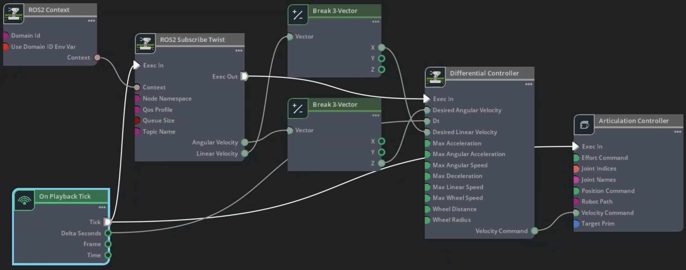
Script Editor Code
import omni.graph.core as og
import omni.kit.app
import omni.usd
from pxr import Sdf
extension_manager = omni.kit.app.get_app().get_extension_manager()
extension_manager.set_extension_enabled_immediate("isaacsim.core.nodes", True)
extension_manager.set_extension_enabled_immediate("isaacsim.robot.wheeled_robots", True)
extension_manager.set_extension_enabled_immediate("isaacsim.ros2.nodes", True)
ROBOT_PRIM = "/dd100"
CHASSIS_LINK = f"{ROBOT_PRIM}/Geometry/base_link/chassis_link"
GRAPH_PATH = f"{CHASSIS_LINK}/cmd_vel"
stage = omni.usd.get_context().get_stage()
if stage.GetPrimAtPath(GRAPH_PATH):
stage.RemovePrim(GRAPH_PATH)
keys = og.Controller.Keys
og.Controller.edit(
{"graph_path": GRAPH_PATH, "evaluator_name": "execution"},
{
keys.CREATE_NODES: [
("OnPlaybackTick", "omni.graph.action.OnPlaybackTick"),
("Context", "isaacsim.ros2.bridge.ROS2Context"),
("SubscribeTwist", "isaacsim.ros2.bridge.ROS2SubscribeTwist"),
("BreakLinVel", "omni.graph.nodes.BreakVector3"),
("BreakAngVel", "omni.graph.nodes.BreakVector3"),
("DiffController", "isaacsim.robot.wheeled_robots.DifferentialController"),
("ArtController", "isaacsim.core.nodes.IsaacArticulationController"),
],
keys.SET_VALUES: [
("SubscribeTwist.inputs:topicName", "cmd_vel"),
("DiffController.inputs:maxAngularSpeed", 1.0),
("DiffController.inputs:maxLinearSpeed", 1.3),
("DiffController.inputs:wheelDistance", 0.45),
("DiffController.inputs:wheelRadius", 0.1),
("ArtController.inputs:jointNames", ["front_left_wheel_joint", "front_right_wheel_joint"]),
("ArtController.inputs:targetPrim", [Sdf.Path(ROBOT_PRIM)]),
],
keys.CONNECT: [
("OnPlaybackTick.outputs:tick", "SubscribeTwist.inputs:execIn"),
("OnPlaybackTick.outputs:deltaSeconds", "DiffController.inputs:dt"),
("SubscribeTwist.outputs:execOut", "DiffController.inputs:execIn"),
("SubscribeTwist.outputs:linearVelocity", "BreakLinVel.inputs:tuple"),
("BreakLinVel.outputs:x", "DiffController.inputs:linearVelocity"),
("SubscribeTwist.outputs:angularVelocity", "BreakAngVel.inputs:tuple"),
("BreakAngVel.outputs:z", "DiffController.inputs:angularVelocity"),
("DiffController.outputs:velocityCommand", "ArtController.inputs:velocityCommand"),
("OnPlaybackTick.outputs:tick", "ArtController.inputs:execIn"),
("Context.outputs:context", "SubscribeTwist.inputs:context"),
],
},
)
创建好 ActionGraphs 后，您可以在已加载 ROS 2 环境的终端中验证预期数据是否出现在 ROS 2 主题上：
在 Isaac Sim 中选择 Play。
验证您是否收到以下主题：
ros2 topic list
预期输出：
/cmd_vel /platform/joint_states /odom /parameter_events /rosout /scan /tf /tf_static
要可视化完整的 TF 树：
确保来自 生成机器人描述 步骤的机器人描述启动文件仍在运行。如果已关闭，请重新启动它：
ros2 launch clearpath_platform_description description.launch.py -- setup_path:=$ROBOT_PARAMS
ros2 launch clearpath_platform_description description.launch.py -- setup_path:=$env:ROBOT_PARAMS
使用
tf2_tools包中的view_frames生成 TF 树 PDF。ros2 run tf2_tools view_frames
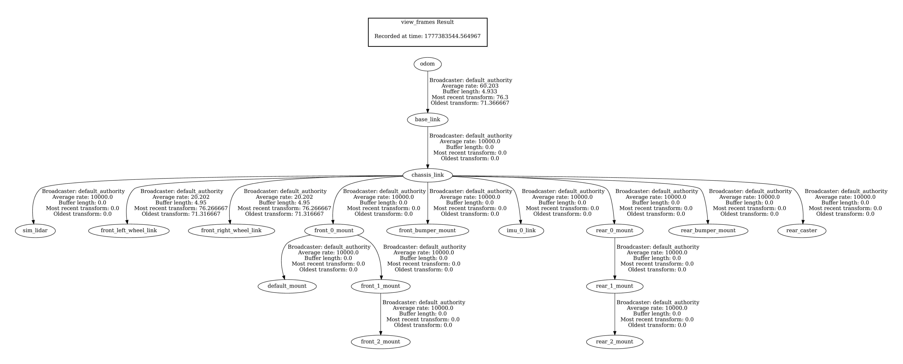
生成 TF 树 PDF 后，您可以关闭机器人描述启动终端。
要运行测试以验证 cmd_vel ActionGraph 是否正常工作：
通过点击 Create > Physics > Ground Plane 添加地面平面，然后点击 Play。
在已 source 的 ROS 2 终端中，向
/cmd_vel话题发布 twist 消息（见下文）。验证机器人是否在环境中移动。
ros2 topic pub /cmd_vel geometry_msgs/Twist "{'linear': {'x': 1, 'y': 0.0, 'z': 0.0}, 'angular': {'x': 0.0, 'y': 0.0, 'z': 1.0}}" --once
验证机器人移动后保存场景。在保存之前，您可以删除地面平面或将其移动到默认 prim 之外。
添加自动命名空间属性#
添加 isaac:namespace 属性可确保话题名称具有描述性，并在多个机器人共享场景时实现良好的扩展性。
提示
有关详细信息，请参阅 自动 ROS 2 命名空间生成 教程。
对于下表列出的每个 prim，添加 isaac:namespace 属性：
选择该 prim。
在属性面板中点击 Add。
导航至 Isaac > Namespace。
将值设置为表中对应的 Namespace Value。
Prim |
命名空间值 |
|---|---|
|
|
|
|
现在，选择 Play 后，运行：
ros2 topic list
预期输出，包含带命名空间的话题：
/dd100_0000/cmd_vel
/dd100_0000/platform/joint_states
/dd100_0000/odom
/dd100_0000/sim_lidar/scan
/dd100_0000/tf
/dd100_0000/tf_static
/parameter_events
/rosout
保存场景。
仿真场景#
首先加载一个更大的仓库环境。
提示
有关发布仿真时间的详细信息，请参阅 ROS 2 时钟。
使用
CTRL+N创建新的 Stage。从 Content browser 中拖入仓库环境，路径为 Isaac Sim > Environments > Simple_Warehouse > full_warehouse.usd。
将 Translate 分量归零。
将
dd100_with_sensors.usdUSD 文件拖到舞台上。将 Translate 分量设置为
(-3.0, 6.0, 0.025)，将 Orient 分量设置为(0.0, 0.0, 90.0)。
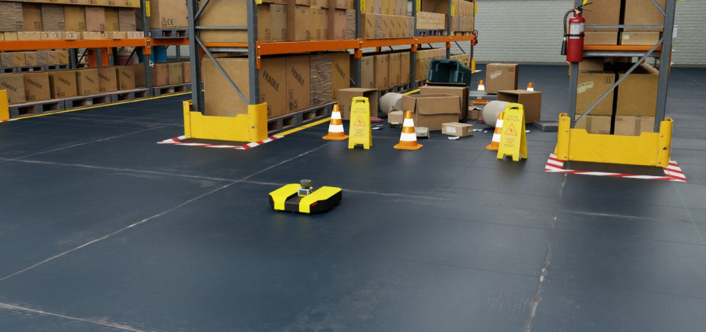
接下来，添加一个 clock ActionGraph。应将其添加到最终场景中，而不是直接添加到机器人中，这样在添加多个机器人时就不会发布重复的时钟消息。
右键单击舞台并选择 Create > Action Graph 以创建新的 ActionGraph。将其重命名为
clock。添加以下节点：On Playback Tick、ROS2 Context、Isaac Read Simulation Time 和 ROS2 Publish Clock。
按照下图所示将它们连接起来。
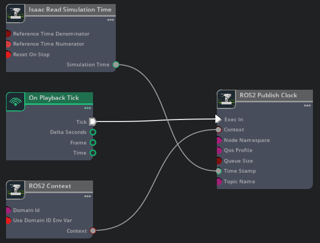
Script Editor Code
import omni.graph.core as og import omni.kit.app import omni.usd extension_manager = omni.kit.app.get_app().get_extension_manager() extension_manager.set_extension_enabled_immediate("isaacsim.core.nodes", True) extension_manager.set_extension_enabled_immediate("isaacsim.ros2.nodes", True) GRAPH_PATH = "/World/clock" stage = omni.usd.get_context().get_stage() if stage.GetPrimAtPath(GRAPH_PATH): stage.RemovePrim(GRAPH_PATH) keys = og.Controller.Keys og.Controller.edit( {"graph_path": GRAPH_PATH, "evaluator_name": "execution"}, { keys.CREATE_NODES: [ ("OnPlaybackTick", "omni.graph.action.OnPlaybackTick"), ("Context", "isaacsim.ros2.bridge.ROS2Context"), ("ReadSimTime", "isaacsim.core.nodes.IsaacReadSimulationTime"), ("PublishClock", "isaacsim.ros2.bridge.ROS2PublishClock"), ], keys.CONNECT: [ ("OnPlaybackTick.outputs:tick", "PublishClock.inputs:execIn"), ("ReadSimTime.outputs:simulationTime", "PublishClock.inputs:timeStamp"), ("Context.outputs:context", "PublishClock.inputs:context"), ], }, )
将舞台保存为
dd100_warehouse_navigation.usd。
占用栅格地图#
Nav2 需要环境的占用地图来规划无碰撞路径。请使用 占用地图生成器扩展 生成占用地图。
提示
如需包含截图的更详细操作指南，请参阅 ROS 2 导航教程中的占用地图部分。
切换到 Top 相机视图（视口左上角的 Camera 下拉菜单 > Top）。
打开 Tools > Robotics > Occupancy Map。
将原点设置为
(0.0, 0.0, 0.0)。将 Lower Bound Z 设置为0.2，将 Upper Bound Z 设置为0.62。在 Stage Tree 中选择仓库根 prim，然后在占用地图扩展中点击 BOUND SELECTION 以自动适配地图边界。
点击 CALCULATE，然后点击 VISUALIZE IMAGE。
点击 Save YAML 并保存为
dd100_warehouse_navigation.yaml。点击 Save Image 并保存为
dd100_warehouse_navigation.png，将其保存在与 YAML 文件相同的目录中。
生成的占用地图应类似于下图：
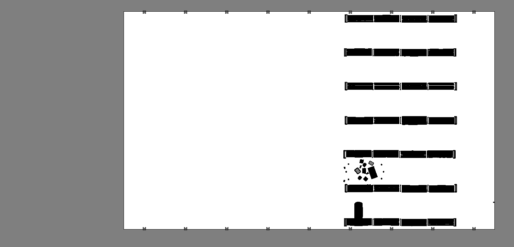
从完整仓库环境生成的占用地图。由于您将 Lower Bound Z 设置为 0.2（高于机器人），因此机器人不可见。#
运行 Nav2#
使用 Nav2 堆栈控制机器人。Nav2 是一个基于 ROS 2 的移动机器人导航堆栈。它提供了一套用于构建和运行导航系统的工具和库。
提示
有关详细的 Nav2 演练，请参阅 ROS 2 Navigation。
在 Isaac Sim 中单击 Play。
在已加载 ROS 环境的终端中，启动完整的导航堆栈。此操作将通过单条命令启动
robot_state_publisher、Nav2 和 RViz。Nav2 参数已在isaacsim_clearpath_nav2包中预先配置。ros2 launch isaacsim_clearpath_nav2 clearpath_navigation.launch.xml \ map:=/path/to/dd100_warehouse_navigation.yaml \ namespace:=dd100_0000
ros2 launch isaacsim_clearpath_nav2 clearpath_navigation.launch.xml ` map:=C:\path\to\dd100_warehouse_navigation.yaml ` namespace:=dd100_0000
当
rviz打开时，通过单击窗口顶部的 2D Pose Estimate 按钮，并在地图上机器人的当前位置处单击以放置位姿估计，从而设置机器人的初始位姿。在 Adaptive Monte Carlo Localization (AMCL) 完成机器人定位后，使用 Nav2 Goal 按钮发送导航目标。将目标放置在通道中设备上方。

在 RViz 中设置初始位姿估计和 Nav2 目标，然后在 Isaac Sim 中观察机器人向目标导航。#
由于机器人配备了 LiDAR，且 Nav2 会在障碍物出现时主动重新计算路径，因此你可以通过环境对机器人进行交互。

基于环境干扰的交互式机器人响应。#
总结#
在本教程中，你：
使用 URDF Importer Extension 将 Clearpath Dingo-D URDF 机器人模型导入 Isaac Sim。
集成了物理和碰撞属性，包括驱动轮和万向轮的关节阻尼及物理材质。
在机器人模型上附加了 RealSense D455 深度相机和 SICK microScan3 LiDAR 传感器。
构建了 OmniGraph 发布者和订阅者，以将机器人连接到 ROS 2 网络（关节状态、里程计、TF、激光扫描、时钟和 cmd_vel）。
集成了 Nav2 导航栈，使机器人在仓库环境中自主地在两点之间移动。
后续步骤#
继续学习 ROS 2 教程系列中的下一个教程 Add Noise to Camera，为相机数据添加噪声。